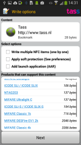

Permissions description
Write options

Here you can set some options for writing:
- Write multiple: (Pro only) When presenting a new item in the write results screen,
the content will immediately be written to that tag as well, until you press done or back.
- Protect: (Pro only) Immediately protect the item after writing it. This is a one-time
operation that cannot be undone
- Confirm overwrite: (Only visible when "Ask in Write Options" selected in "Confirm changes" preference) Show the current content before overwriting an item.
A list will be displayed containing the tags on which the Content can be written.